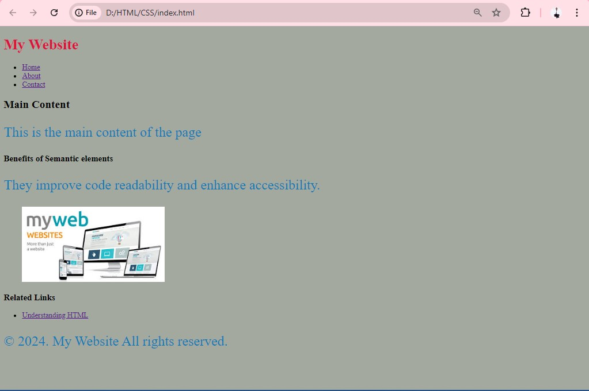

I'm a dedicated graphic designer with a love for all things creative. With a keen eye for detail and a passion for visual storytelling, I thrive on bringing ideas to life through thoughtful design solutions. Whether it's crafting a captivating logo, designing eye-catching marketing materials, or creating engaging digital experiences, I'm committed to delivering designs that not only look great but also effectively communicate the intended message.
Contact: thiongosamuel934@gmail.com
Phone: +254 791 386 234
Description: This is my first project where I built a personal website using basic HTML and CSS. The website includes sections for my bio, projects, skills, experience, and education. This project helped me understand the fundamental structure of HTML and how to style web pages using CSS.
20th October 2020 - Present
As a Quality Analyst specializing in image annotation, my primary responsibility is to ensure the accuracy and quality of annotated images used in machine learning and computer vision projects. Here are the key aspects of my role.
As a freelancer, I provide creative graphic design services for various clients. This involves creating visual content for branding, marketing materials, and digital platforms. My work includes designing logos, brochures, social media graphics, and other visual elements to meet the client's needs and objectives.
June 2019
Studied Machine learning and AI.
January 2022
Completed courses in reference data management.
January 2024 - May 2024
Achieved certification in graphic design.
May 2024 - Present
Studied Software Engineering.